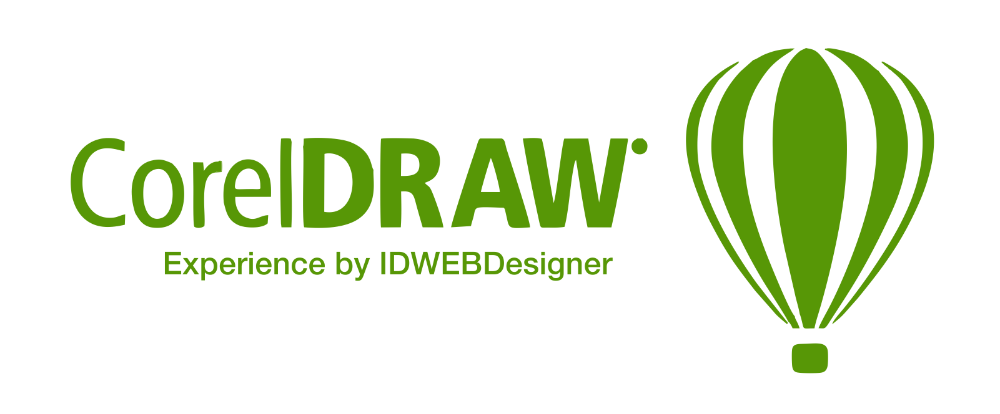

Dalam tutorial hari ini kita akan bersenang-senang menciptakan kartu undangan pesta kita sendiri. Kami akan menambahkan teks dan membuat objek vektor berwarna.
Anda akan belajar bagaimana untuk:
- Membuat latar belakang yang berwarna
- Membuat bentuk dasar dan Membuat angka sederhana
- Menambahkan teks ke kartu Anda
Membuat Kartu Undangan Pesta
Dalam tutorial hari ini kita akan bersenang-senang menciptakan kartu undangan pesta kita sendiri. Kami akan menambahkan teks dan membuat objek vektor berwarna.

Langkah 1 - Buat Dokumen Baru
- Mulailah dengan membuka dokumen baru. Buka: File > lalu klik New… (atau gunakan keyboard shortcut CTRL+N).

- Di jendela Create a New Document, uat perubahan berikut:

- Sekarang klik ikon Landscape untuk membalikkan halaman Anda ke samping.

- Kartu kita akan memiliki dua sisi sehingga kita perlu membuat halaman kedua. Di sudut kiri bawah jendela, klik ikon ‘+’ untuk membuat halaman kedua.

Sekarang kita memiliki dua halaman kosong kita sekarang saatnya untuk mulai menambahkan beberapa teks dan grafik!
Langkah 2 - Membuat latar belakang berwarna
- Untuk membuat latar belakang warna untuk kartu kami, cukup klik dua kali pada Rectangle tool di Toolbox di sisi kiri layar.

- Saat kita membuat bentuk, kita bisa mengisi bentuk berwarna dengan mengklik kiri pada Color Palette.

- Untuk mengubah garis besar bentuk warna, klik kanan pada warna di Color Palette.

- Gergaji ‘tidak berwarna’ di bagian atas Color Palette memungkinkan Anda menghapus warna dari fill atau garis objek.

- Sekarang klik kiri pada warna untuk mengisi persegi panjang dengan warna biru dan klik kanan pada no-color swatch untuk menghapus garis besar.
- Untuk menghentikan latar belakang kita dari bergerak saat kita membuat objek lain, klik kanan dan pilih Lock Object dari menu konteks.

Langkah 3 - Membuat bentuk dasar di CorelDRAW
Jika Anda melihat monster lagi di awal tutorial ini, Anda akan melihat bahwa ada beberapa bentuk sederhana ang bisa kita gambar dengan menggunakan berbagai alat dari Toolbox.Dan yang lainnya diciptakan dengan menggambar ‘freehand’ di CorelDRAW. Sekarang kita akan melihat bagaimana ini bekerja.
Monster Hijau

- Klik pada Ellipse tool (F7), di Toolbox dan seret pada halaman untuk membuat bentuk oval.
- Ubah warna oval dengan klik kiri pada warna di Color Palette.
- Ubah warna garis besar dengan klik kanan pada sebuah warna.

Menciptakan telinga:
- Gambarkan oval lain dengan Ellipse tool dan gunakan Rectangle tool, gambar persegi panjang yang panjang dan tipis di atas. Warna ini sama dengan bentuk oval yang lebih besar. Anda harus memiliki sesuatu seperti ini:

- Dengan Pick tool di bagian atas Toolbox, tariklah dua bentuk baru dan klik pada Weld icon untuk mengelas keduanya.

- Pindahkan telinga ke oval besar lalu klik sekali lagi di atasnya. Persegi, pegangan ukuran akan berubah menjadi pegangan rotasi. Seret pada corner handle untuk memutar bentuknya.

- Untuk membuat telinga kedua, tekan tombol ‘+’ pada keyboard Anda untuk membuat salinan.
- Seret salinannya ke tempatnya dan gunakan ikon Mirror horizontally di Property bar untuk membalik objek. Pindahkan telinga kedua ke posisi yang benar.

- Sekarang pilih semua 3 benda hijau dengan Pick tool dan lepaskan mereka bersama-sama (Jika Anda tidak dapat menarik benda untuk dipilih, tahan tombol SHIF dan klik pada masing-masing objek. Ini juga memungkinkan Anda memilih beberapa objek).

- Sebagian besar wajah sekarang bisa dibuat dengan menggunakan Ellipse tool (F7). Hanya menyeret alat ini pada halaman akan memberi Anda bentuk oval. Untuk menggambar lingkaran sempurna, tahan tombol CTRL saat Anda menyeret. Semua bentuk berikut (mata, hidung, pipi), diciptakan hanya dengan menggunakan Ellipse tool.

Menggunakan Artistic Media tool:
Artistic Media tool Memungkinkan Anda menggambar bentuk vektor yang terlihat hampir seolah-olah mereka dilukis dengan brush dan ada banyak media artistik untuk dipilih! Kami sekarang akan menggunakan Artistic Media tool untuk menciptakan alis Green Monster.
- Klik pada Artistic Media tool (I), di Toolbox.
- Pada Property bar, pilih Preset icon.
- Pilih brush dari daftar drop-down.
- Seret brush di halaman untuk membuat alis.

- Kita sekarang akan menggunakan Freehand tool (F5), di Toolbox untuk membuat sketsa di mulut. Setelah kita menambahkan gigi kita akan menyelesaikan mulut dengan menarik bagian atas menggunakan Artistic Media brush.

Sekarang untuk gigi!
Cara tercepat untuk membuat gigi adalah dengan menggunakan Polygon tool (Y).
- Pilih Polygon tool dari Toolbox.
- Di Property bar, atur jumlah sisi ke 3.
- Gambarkan segitiga pertama, isi dengan warna putih dan buat garis besar warna hitam.

- Dengan gigi yang masih dipilih, tekan tombol ‘+’ pada keyboard Anda untuk membuat salinan.
- Pindahkan ini di sepanjang garis mulut dan putar jika diperlukan. Anda harus ditinggalkan dengan sesuatu seperti ini:

- Untuk menyelesaikannya, pilih Artistic Media (I), dari Toolbox, pilih kuas dari daftar ofPresets di Property bar dan gambar garis di sepanjang tepi atas gigi.
- ulut sekarang harus terlihat seperti ini dan Monster Hijau kita sekarang sudah selesai!

Monster Kuning

Monster kuning menggunakan Artistic Media dan Freehand drawing tool.
- Pilih Freehand tool (F5), dari toolbox dan gambar bentuk kepala monster.

- Untuk menutup bentuknya (sehingga Anda bisa mengisinya dengan warna), saat Anda kembali ke awal jalur, perhatikan sampai bentuk kursor berubah menjadi tanda panah dengan tanda panah dan klik di akhir baris.

- Sekarang klik kiri pada bentuk dan isi dengan warna.
- Buat kacamata hitam dengan membuat dua elips dan mengisinya dengan warna hitam.
- Kemudian gunakan Artistic Media tool lagi untuk membuat rambut.

- Lanjutkan menggunakan Artistic Media tool dan berbagai Preset brushes untuk menambahkan alis, hidung, dan sisi kacamata hitam. Gambarkan dua garis untuk membuat mulut.
- Pastikan sudut mulut menyentuh atau tumpang tindih.

- Sekarang pilih Smart Fill tool dari Toolbox.
- Pada Property bar, atur Fill Color untuk ‘Specify’ dan pilih warna putih.
- Atur Opsi bergaris menjadi ‘Tidak bergaris’.
- Klik di dalam area mulut untuk mengisi dengan warna putih.

Monster Kuning sekarang sudah selesai!
Sekaranag pilih Pick tool lagi dan tariklah monster kuning itu. Tekan CTRL+G untuk mengelompokkan semua objek. Pindahkan monster ke tempat yang Anda inginkan untuk memilikinya.
Rakasa Ungu

Rakasa ketiga kami menggunakan semua alat yang telah kami gunakan sampai sekarang: Freehand tool, Polygon tool, Artistic Media tool dan Smart Fill tool.
- Gunakan Polygon tool dari toolbox dan di Property bar atur jumlah sisi ke 3.
- Gambarlah segitiga dan isi dengan warna ungu.
- Buat mulut dan gigi dengan menggambar persegi panjang dengan Rectangle tool (mulut memiliki warna hitam dan garis besar merah).
- Di Property bar, meningkatkan garis besar lebar mulut.
- Giginya putih tanpa garis besar.
Anda sekarang harus memiliki gambar seperti ini:

- Gunakan Artistic Media tool untuk menggambar bentuk hitam.
- sesuaikan lebar brush di Property bar.
- Tarik pada halaman untuk membuat bentuk hitam.
- Gunakan Ellipse tool untuk menggambar warna.

- Pilih di sekitar bentuk hitam dan mata dengan Pick tool.
- Klik pada ikon Group Objects (CTRL+G), di Property bar untuk mengelompokkan objek.
- Tekan Tombol ‘+’ pada Property bar untuk membuat salinan.
- Klik ikon Mirror horizontally di Property bar untuk membalik objek sekitar
- Tempatkan objek baru pada posisi yang benar.

Kita sekarang akan membuat topi pesta untuk monster kita.

- Gunakan Polygon tool dengan jumlah sisi yang disetel ke 3 untuk membuat segitiga oranye.
- Di Toolbox, klik pada segitiga hitam kecil di sebelah Polygon tool untuk membuka menu flyout.
- Sekarang pilih Star tool. (Anda dapat mengubah jumlah poin untuk Bintang di Property bar).
- Sekarang gambarlah sebuah bintang besar untuk bagian atas topi partai. Tambahkan fill kuning dan lepaskan garis besar dengan mengklik kanan pada ‘No color‘ swatch di Color Palette.
- Bintang-bintang yang lebih kecil di atas topi telah diperbaiki dengan mengklik kiri pada ‘No color‘ swatch.

- Pilih semua objek topi dengan Pick tool dan klik pada ikon Group Objects (CTRL+G), pada Property bar.
- Pindahkan topi di atas kepala monster ungu dan klik sekali lagi pada topi untuk mendapatkan pegangan rotasi. Putar sedikit topi. Inilah yang seharusnya dimiliki monster kita saat ini:

- Untuk menarik tangan, ambil Freehand tool dan tarik beberapa tangan pada monster itu, tapi pastikan garis 'menggantung di atas' tepi tubuh, seperti ini:

- Sekarang pilih Smart Fill tool dari Toolbox dan di Property bar, aturOpsi Fill ke warna pink. TetapkanOutline options ke No Outline.
- Klik di tangan untuk membuat bentuk tangan baru berwarna pink.
- Dengan Pick tool, pilih dan hapus garis besar tangan hitam dengan menekan tombol Delete.

Anda sekarang bisa menghabisi monster ungu dengan menggunakan Ellipse tool misalnya, untuk membuat kuku jari.
Monster Ungu sekarang sudah selesai!

Langkah 4 - Menambahkan teks ke kartu kami
Yang dilakukan adalah menambahkan teks ke bagian depan kartu.
- Pilih Text tool (F8), dari Toolbox.
- Klik pada halaman dan ketik pesan undangan Anda.
- Beralih kembali ke Pick tool, pilih teks dan pilih font yang sesuai dengan desain Anda dengan memilih salah satu dari daftar drop-down di Property bar.

- Teks ungu di sini pertama kali dipilih dengan Pick tool, lalu diputar.
Langkah 5 - Menciptakan sisi belakang kartu

- Klik pada Page 2 tab di bagian bawah jendela.
- Klik dua kali pada Rectangle tool untuk membuat persegi panjang seukuran halaman. Isi dengan warna hitam.
- Gunakan Text tool untuk membuat teks, lalu dengan Pick tool, klik kiri putih di Color Palette untuk mengubah warna teks menjadi putih.
- Wajah di bagian bawah dibuat menggunakan Ellipse dan Artistic Media tool.

- Untuk membuat rambut kurus, pilih Spiral tool dari toolbox.

- Pilih Shape tool (F10), dari Toolbox dan gunakan ini untuk memilih sekitar spiral.
- Di Property bar, Klik pada ikon Elastic mode.
- Tarik keluar dari tengah spiral untuk menciptakan bentuk seperti musim semi

- Letakkan pegas di atas wajah dan gunakan tombol '+' pada keyboard untuk membuat salinan.
- Klik setiap musim semi lagi untuk mendapatkan rotation handles dan atur spring individu.

Langkah 6 - Menyimpan kartu Anda
Once your design is finished you need to save it.
- Buka File > Save… dan di jendela simpan file Anda sebagai .CDR file jika Anda ingin mengeditnya lagi di masa mendatang.

- Jika Anda mengirim file Anda ke toko printer agar dicetak, Anda mungkin ingin menyimpan file tersebut sebagai file PDF juga. Buka: File > Publish to PDF ke PDF export window, pilih Prepress dari daftar drop-down PDF preset > KlikSave.